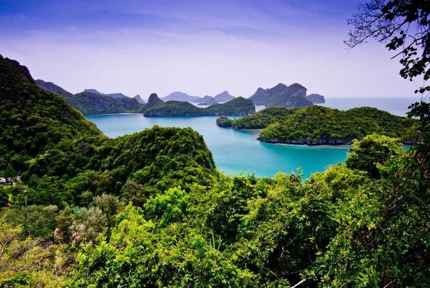
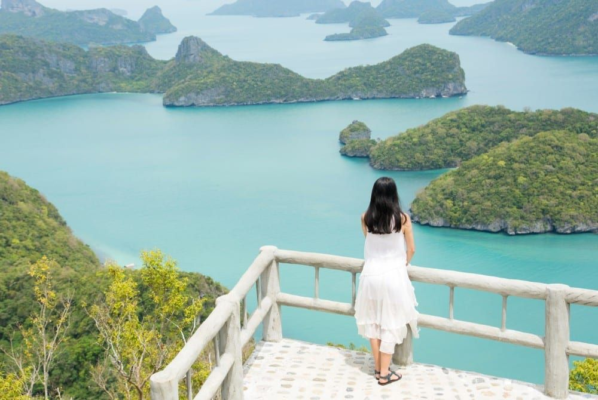
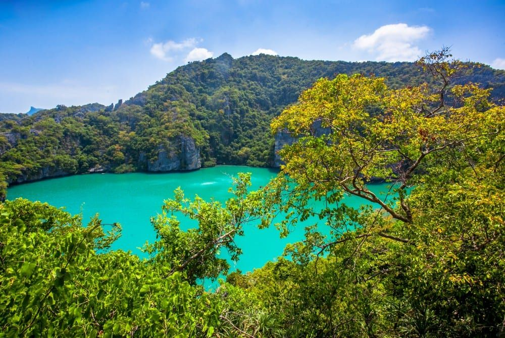
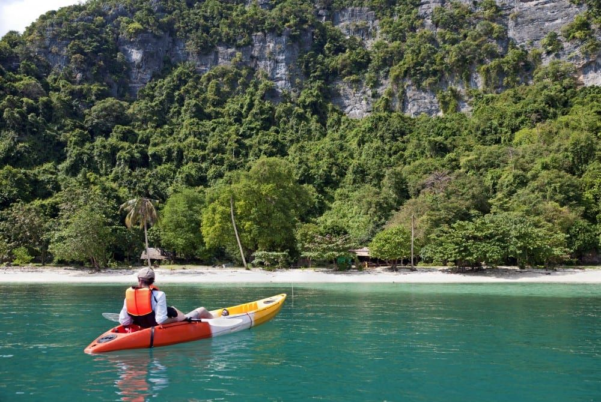
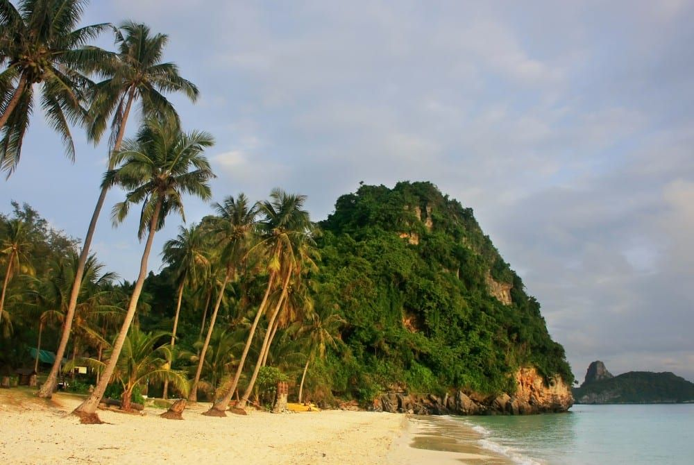
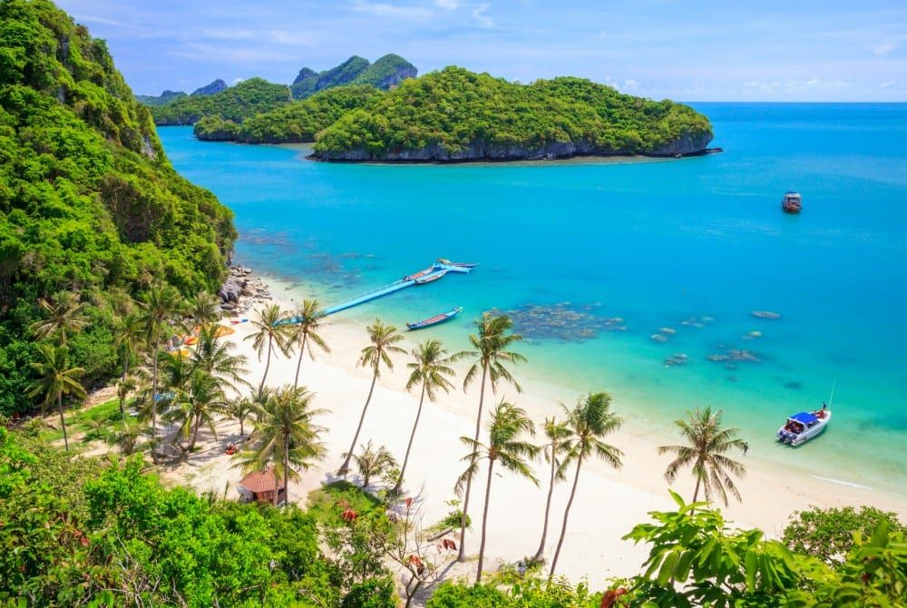

Het is doorgaans lang zoeken naar onverdorven stranden in Thailand, maar in het Ang Thong Marine National Park heb je ze in overvloed. Deze paradijselijke archipel in de Golf van Thailand omvat 42 tropische eilandjes die worden omringd door een prachtige onderwaterwereld. En het fijne? Je hoeft het met bijna niemand te delen.
De natuurlijke schoonheid van het Ang Thong Marine National Park vormde de inspiratie voor het legendarische boek The Beach. De film werd opgenomen op het minstens zo mooie Koh Phi Phi, maar het echte verhaal speelde zich hier af. Vanwege de beschermde status is er sindsdien nog maar weinig veranderd en kun je er net als schrijver Alex Garland in alle rust genieten van het tropische decor.
Het Ang Thong Marine National Park bestaat uit 42 tropische eilandjes. Het grootste eiland van de archipel is het mooie Koh Wua Talop, waar je een van de indrukwekkendste uitzichtpunten van heel Thailand vindt. Om er te komen moet je een flinke klim maken, de weg omhoog is steil en het pad ligt bezaaid met stenen rotsblokken. Je bent zeker een uur onderweg, maar hoger je komt, hoe meer zich de schoonheid van deze regio aan je openbaart. Eenmaal aan de top word je beloond met een geweldig mooi uitzicht over de smaragdgroene zee en de vele kleine eilandjes. Gelukkig is de weg omlaag een stuk makkelijker en kun je jezelf na afloop trakteren op een duik in het verkoelende zeewater. Koh Wua Talop is de enige plek van de eilandengroep waar je kan overnachten; er zijn enkele simpele bungalows maar daarvoor moet je wel ruim op tijd hebben gereserveerd.
 Koh Mae Ko betekent letterlijk Moedereiland en is naast Koh Wua Talop een van de belangrijkste bezienswaardigheden van de eilandengroep. Op dit eiland vind je namelijk het Emerald Lake. Het water in dit prachtige meer heeft door een unieke samenstelling van mineralen een smaragdgroene kleur gekregen, en wordt omringd door grillige karstbergen. Ook hier geldt dat je een flink stuk moet hiken om er te komen, maar als je na veertig minuten aan de rand van het meer staat, dan is de inspanning snel vergeten: wat een uitzicht en wat een prachtige omgeving. Hoewel verleidelijk is het hier streng verboden om te zwemmen, want elke vorm van menselijke interventie kan de zoutbalans van het meer verstoren en de prachtige groene kleur doen vervagen.
De kleine eilandjes Koh Samsao en Koh Tai Plai staan bekend om hun fascinerende rotsformaties en rotsbogen die tijdens eb tevoorschijn komen. Deze piepkleine tropische puistjes hebben mooie stranden en worden omringd door ondiep water waar je kan snorkelen tussen kleurrijk koraal. Mocht je geen genoeg krijgen van de spectaculaire uitzichten over de eilandjes, dan kun je op Koh Samsao met een trap naar boven lopen en genieten van het beeldschone natuurgebied dat aan je voeten ligt.
 De eilanden van het Ang Thong National Marine Park staan niet bekend om hun langgerekte zandstranden, maar er zijn een aantal plekken waar je het paradijs binnen handbereik hebt. De eilandjes Koh Tai Plao, Koh Wuakantang en Koh Hintap beschikken over tientallen onverdorven zandstranden waar je je handdoekje kan uitrollen in een beschutte baaien en vanaf de waterkant kan genieten van het glinsterende water in de verte. Er zijn geen strandtentjes, geen mannen die maïskolven verkopen en geen andere toeristen, een tropisch paradijsje dat je dus maar met weinig mensen hoeft te delen. En dat zie je in Thailand niet zo heel veel meer.
Dankzij de beschermde status is het Ang Thong Marine National Park een uitstekende plek om het gevarieerde onderwaterleven van dichtbij te bestuderen. Schildpadden, zeeslangen en scholen vol gekleurde vissen vind je er volop, en je kan prachtig zwemmen tussen het mooie koraal. Hoewel het park zich qua schoonheid niet kan meten met het nabijgelegen Ko Tao, is het toch de moeite waard om hier met een snorkel de bodem af te speuren. Het water rondom de eilanden Koh Tai Plao en Koh Samsao is ondiep en heeft een gevarieerd koraalrif waar je goed kan snorkelen. Verderop liggen kleine grotten die je alleen met een duikuitrusting kan bezoeken. Vanaf Koh Samui en Koh Pha-Ngan vertrekken bijna dagelijks boten die je op een duik- of snorkelexcursie kunnen meenemen en aan het eind van de dag weer netjes afzetten bij je resort.

Het Ang Thong Marine National Park is gelegen in de Golf van Thailand, nabij de eilanden Koh Samui, Koh Tao en Koh Phangan. Vanaf daar kun je makkelijk een excursie naar de archipel regelen, want er vertrekken regelmatig boten die kant op. Tijdens een excursie bezoek een aantal eilandjes, waaronder Koh Wua Talop en Koh Mae Ko, en kun je onderweg snorkelen op de meest paradijselijke plekjes.